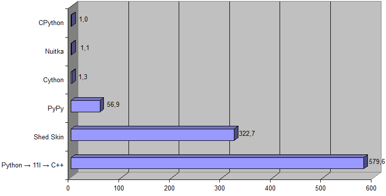

████
██
██
██
██
██
██
██████████
|
████
██
██
██
██
██
██
██████████
|
████
██
██
██
██
██
██
██████████
|
11l — это компилируемый язык программирования общего назначения, обеспечивающий простое и прямое отображение программы на аппаратную часть и стремящийся следовать принципу нулевых накладных расходов как C++ (неиспользуемые возможности языка не добавляют накладных расходов времени выполнения). 11l — статически типизированный, но ощущается как динамически типизируемый язык (как например Python).
Дизайн 11l направлен на максимальную краткость и лаконичность.
Также 11l пытается совместить хорошую читаемость и выразительность кода (как в Python) с производительностью C++.
Явное отличие 11l от всех других языков программирования заключается в том, что его ключевые слова организованы в виде дерева, а не просто списка.
В корне этого дерева располагаются 11 базовых ключевых слов, которые можно сокращать до одной буквы. [Короткие однобуквенные ключевые слова выглядят странно на первый взгляд, но это всего лишь дело привычки.]
Дерево всех ключевых слов 11l
── C/in\С/св
── I/if\Е/если ──┬── likely\часто
└── unlikely\редко
── E/else\И/иначе
── F/fn\Ф/фн ──┬── args\арг
├── destructor\деструктор
└── virtual\виртуал ──┬── new\новая
├── override\переопр
├── final\финал
├── abstract\абстракт
└── assign\опред
── L/loop\Ц/цикл ──┬── continue\продолжить
├── break\прервать
├── remove_current_element_and_continue\удалить_текущий_элемент_и_продолжить
├── remove_current_element_and_break\удалить_текущий_элемент_и_прервать
├── on_continue\при_продолжении
├── on_break\при_прерывании
├── was_no_break\не_был_прерван
├── index\индекс
├── last_iteration\последняя_итерация
├── next\след
└── prev\пред
── N/null\Н/нуль
── R/return\Р/вернуть
── S/switch\В/выбрать ──┬── break\прервать
└── fallthrough
── T/type\Т/тип ──┬── base\базовый
├── enum\перечисл
└── interface\интерфейс
── V/var\П/пер
── X/exception\Х/исключение ──┬── try\контроль
├── catch\перехват
└── try_end
Примеры
algoprog.ru
| Python | 11l | C++ |
while True: if instr[i] == "[": nesting_level += 1 elif instr[i] == "]": nesting_level -= 1 if nesting_level == 0: break i += 1 |  | while (true) { switch (instr[i]) { case '[': nesting_level++; break; case ']': if (--nesting_level == 0) goto break_; break; } i++; ... } break_: |
| Python | 11l |
was_break = False for i in range(1, len(self.children), 2): if self.children[i].token.value(source) in ('E', 'И', 'else', 'иначе'): res += char_or_str(self.children[i+1], char_val) was_break = True break res += 'a == ' + char_or_str(self.children[i], char_key) \ + ' ? ' + char_or_str(self.children[i+1], char_val) + ' : ' if not was_break: # or else: res += 'throw KeyError(a)' ... for i in range(len(self.children)): res += self.children[i].to_str() if i < len(self.children)-1: res += ', ' ... for line_number, line in enumerate(file.readlines(), 1): print(str(line_number) + '. ' + line.rstrip("\n")) ... while i < len(source) and ('0' <= source[i] <= '9' or 'a' <= source[i] <= 'f' or 'A' <= source[i] <= 'F' or source[i] == '_'): i += 1 ... if source[lexem_start:lexem_start+3] == '(.)': i += 2 category = Token.Category.NAME ... load64(state[8*(x+5*y):8*(x+5*y)+8]) ... if token.category in (Token.Category.NUMERIC_LITERAL, Token.Category.STRING_LITERAL): key = '(literal)' elif token.category == Token.Category.NAME: key = '(name)' elif token.category == Token.Category.CONSTANT: key = '(constant)' elif token.category in (Token.Category.STATEMENT_SEPARATOR, Token.Category.DEDENT): key = ';' else: key = token.value(source) | L(i) (1 .< .children.len).step(2) I .children[i].token.value(source) C (‘E’, ‘И’, ‘else’, ‘иначе’) res ‘’= char_or_str(.children[i+1], char_val) L.break res ‘’= ‘a == ’char_or_str(.children[i], char_key)‘ ? ’ ‘’char_or_str(.children[i+1], char_val)‘ : ’ L.was_no_break res ‘’= ‘throw KeyError(a)’ ... L(child) .children res ‘’= child.to_str() I !L.last_iteration res ‘’= ‘, ’ ... L(line) file.read_lines() V line_number = L.index + 1 print(line_number‘. ’line) ... L i < source.len & source[i] C (‘0’..‘9’, ‘a’..‘f’, ‘A’..‘F’, ‘_’) i++ ... I source[lexem_start .+ 3] == ‘(.)’ i += 2 category = NAME ... load64(state[8*(x+5*y) .+ 8]) ... V key = S token.category NUMERIC_LITERAL, STRING_LITERAL ‘(literal)’ NAME ‘(name)’ CONSTANT ‘(constant)’ STATEMENT_SEPARATOR, DEDENT ‘;’ E token.value(source) |
main_window.pos.x = 10 main_window.pos.y = 20 ... width = active_window.rect.right - active_window.rect.left ... dot_pos = token.value(source).find('.') if dot_pos == -1: dot_pos = len(token.value(source)) | main_window.pos. .x = 10 .y = 20 ... V width = active_window.rect. {.right - .left} ... V dot_pos = token.value(source). {.find(‘.’) ? .len} |
Python:import os for root, dirs, files in os.walk('.'): dirs[:] = [d for d in dirs if d[0] != '.'] # exclude hidden folders (e.g. `.hg`) for name in files: if name.endswith(('.py', '.txt')): file_bytes = open(os.path.join(root, name), 'rb').read() if b"\r" in file_bytes or b"\t" in file_bytes: print(R"Unallowed character (\r or \t) found in file '" + os.path.join(root, name)[2:] + "'") |
11l:L(fname) fs:walk_dir(‘.’, dir_filter' d -> d[0] != ‘.’) I fname.ends_with((‘.py’, ‘.txt’)) & File(fname).read_bytes().find(("\r".code, "\t".code)) != N print(‘Unallowed character (\r or \t) found in file '’fname[2..]‘'’) |
Пересечение отрезков:
Постройте квадрат:
Rosetta Code| Python | 11l |
(p1x, p1y, p2x, p2y) = map(int, input().split()) (m1x, m1y, m2x, m2y) = map(int, input().split()) def point_belongs_to_segment(px, py, sx, sy, ex, ey): return (ex - sx)*(py - sy) - (ey - sy)*(px - sx) == 0 \ and (sx - px)*(ex - px) + (sy - py)*(ey - py) <= 0 def cross(v0x, v0y, v1x, v1y): return v0x * v1y - v0y * v1x if point_belongs_to_segment(p1x, p1y, m1x, m1y, m2x, m2y) or \ point_belongs_to_segment(p2x, p2y, m1x, m1y, m2x, m2y) or \ point_belongs_to_segment(m1x, m1y, p1x, p1y, p2x, p2y) or \ point_belongs_to_segment(m2x, m2y, p1x, p1y, p2x, p2y) or \ (cross(p2x - p1x, p2y - p1y, m2x - p1x, m2y - p1y) * cross(p2x - p1x, p2y - p1y, m1x - p1x, m1y - p1y) < 0 and cross(m2x - m1x, m2y - m1y, p1x - m1x, p1y - m1y) * cross(m2x - m1x, m2y - m1y, p2x - m1x, p2y - m1y) < 0): print('YES') else: print('NO') | V (p1x, p1y, p2x, p2y) = input().split(‘ ’).map(Int) V (m1x, m1y, m2x, m2y) = input().split(‘ ’).map(Int) V p1 = (p1x, p1y) V p2 = (p2x, p2y) V m1 = (m1x, m1y) V m2 = (m2x, m2y) F point_belongs_to_segment(p, s, e) R cross(e - s, p - s) == 0 & dot(s - p, e - p) <= 0 I point_belongs_to_segment(p1, m1, m2) | point_belongs_to_segment(p2, m1, m2) | point_belongs_to_segment(m1, p1, p2) | point_belongs_to_segment(m2, p1, p2) | (cross(p2 - p1, m2 - p1) * cross(p2 - p1, m1 - p1) < 0 & cross(m2 - m1, p1 - m1) * cross(m2 - m1, p2 - m1) < 0) print(‘YES’) E print(‘NO’) |
| Python | 11l |
(ax, ay, bx, by) = map(int, input().split()) abx = bx - ax aby = by - ay perp_abx = -aby perp_aby = abx acx = (abx + perp_abx) / 2 acy = (aby + perp_aby) / 2 adx = (abx - perp_abx) / 2 ady = (aby - perp_aby) / 2 print(ax + acx, ay + acy, ax + adx, ay + ady) | V (ax, ay, bx, by) = input().split(‘ ’).map(Int) V a = (ax, ay) V b = (bx, by) V ab = b - a V perp_ab = perp(ab) V ac = (ab + perp_ab) / 2 V ad = (ab - perp_ab) / 2 print_elements(a + ac, end' ‘ ’) print_elements(a + ad) |
Benford's law:
Caesar cipher:
Gaussian elimination:
Loops/Nested:
100 doors | Visualize a tree | Execute Brain****
Simple moving average | Align columns | Arithmetic evaluation
Comma quibbling | Constrained random points on a circle | CRC-32
Diversity prediction theorem | Equilibrium index | Fibonacci n-step number sequences
Find the intersection of a line with a plane | Find the last Sunday of each month
Find the missing permutation | Largest number divisible by its digits | Menu | Modulinos
Multifactorial | JSON | Palindrome dates | Pangram checker | Prime conspiracy
Pseudo-random numbers/Splitmix64 | Ramer-Douglas-Peucker line simplification
Resistance calculator | Resistor mesh | Sort a list of object identifiers
URL decoding | URL encoding | UTF-8 encode and decode | Word frequency
Left factorials | Successive prime differences | Eertree | Generator/Exponential
Huffman coding | Inverted index | Poker hand analyser | Patience sort | Sudoku
Tic-tac-toe | Vector | Calkin-Wilf sequence | Canonicalize CIDR | Change e letters to i in words
Closures/Value capture | Combinations with repetitions | Decision tables
Elementary cellular automaton | Find if a point is within a triangle | Hilbert curve
Kronecker product based fractals | Loops/Wrong ranges | MD5/Implementation
Modified random distribution | Simple database | Smallest square that begins with n
Tree datastructures | Camel case and snake case | Sierpinski square curve | Wordiff
[Все примеры на Rosetta Code]
F get_fibs() V a = 1.0 V b = 1.0 [Float] r L 1000 r [+]= a (a, b) = (b, a + b) R r F benford(seq) V freqs = [(0.0, 0.0)] * 9 V seq_len = 0 L(d) seq I d != 0 freqs[String(d)[0].code - ‘1’.code][1]++ seq_len++ L(&f) freqs f = (log10(1.0 + 1.0 / (L.index + 1)), f[1] / seq_len) R freqs print(‘#9 #9 #9’.format(‘Actual’, ‘Expected’, ‘Deviation’)) L(p) benford(get_fibs()) print(‘#.: #2.2% | #2.2% | #.4%’.format(L.index + 1, p[1] * 100, p[0] * 100, abs(p[1] - p[0]) * 100)) |
F caesar(string, =key, decode = 0B) I decode key = 26 - key V r = ‘ ’ * string.len L(c) string r[L.index] = S c ‘a’..‘z’ Char(code' (c.code - ‘a’.code + key) % 26 + ‘a’.code) ‘A’..‘Z’ Char(code' (c.code - ‘A’.code + key) % 26 + ‘A’.code) E c R r |
| C | 11l |
void swap_row(double *a, double *b, int r1, int r2, int n)
{
double tmp, *p1, *p2;
int i;
if (r1 == r2) return;
for (i = 0; i < n; i++) {
p1 = mat_elem(a, r1, i, n);
p2 = mat_elem(a, r2, i, n);
tmp = *p1, *p1 = *p2, *p2 = tmp;
}
tmp = b[r1], b[r1] = b[r2], b[r2] = tmp;
}
...
| F swap_row(&a, &b, r1, r2) I r1 != r2 swap(&a[r1], &a[r2]) swap(&b[r1], &b[r2]) ... |
[[Int]] mat L 10 mat [+]= (1..10).map(x -> random:(1..20)) L(row) mat L(el) row print(el, end' ‘ ’) I el == 20 L(row).break |
Simple moving average | Align columns | Arithmetic evaluation
Comma quibbling | Constrained random points on a circle | CRC-32
Diversity prediction theorem | Equilibrium index | Fibonacci n-step number sequences
Find the intersection of a line with a plane | Find the last Sunday of each month
Find the missing permutation | Largest number divisible by its digits | Menu | Modulinos
Multifactorial | JSON | Palindrome dates | Pangram checker | Prime conspiracy
Pseudo-random numbers/Splitmix64 | Ramer-Douglas-Peucker line simplification
Resistance calculator | Resistor mesh | Sort a list of object identifiers
URL decoding | URL encoding | UTF-8 encode and decode | Word frequency
Left factorials | Successive prime differences | Eertree | Generator/Exponential
Huffman coding | Inverted index | Poker hand analyser | Patience sort | Sudoku
Tic-tac-toe | Vector | Calkin-Wilf sequence | Canonicalize CIDR | Change e letters to i in words
Closures/Value capture | Combinations with repetitions | Decision tables
Elementary cellular automaton | Find if a point is within a triangle | Hilbert curve
Kronecker product based fractals | Loops/Wrong ranges | MD5/Implementation
Modified random distribution | Simple database | Smallest square that begins with n
Tree datastructures | Camel case and snake case | Sierpinski square curve | Wordiff
[Все примеры на Rosetta Code]
| Документация |
Производительность
Транспайлер Python → 11l → C++ можно использовать как ускоритель кода на Python.
Вот результаты для программы преобразования пк-разметки в HTML (в качестве исходных данных был взят исходник статьи по пк-разметке):  (Shed Skin не представлен здесь, т.к. он не поддерживает локальные функции.) [Вот архив с использовавшейся программой для сравнения производительности [под Windows] (требуются установленный Python 3.6 или выше и следующие Python-пакеты: pywin32, cython).] А вот результаты для задачи Простое число (при K = 1000000):  Вот соответствующий исходный код решения данной задачи на языке Python import math k = int(input()) n = k * 17 primes = [True] * n primes[0] = primes[1] = False for i in range(2, int(math.sqrt(n)) + 1): if not primes[i]: continue for j in range(i * i, n, i): primes[j] = False for i in range(n): if primes[i]: if k == 1: print(i) break k -= 1 А этот код {… def is_right_triangle(x1, y1, x2, y2): a = x1**2 + y1**2 b = x2**2 + y2**2 c = (x2 - x1)**2 + (y2 - y1)**2 return (a + b == c) or (b + c == a) or (c + a == b) LIMIT = 51 ans = 0 for x1 in range(LIMIT): for y1 in range(LIMIT): for x2 in range(LIMIT): for y2 in range(LIMIT): # For uniqueness, ensure that (x1,y1) has a larger angle than (x2,y2) if y2 * x1 < y1 * x2 and is_right_triangle(x1, y1, x2, y2): ans += 1 print(ans) (На основе этого решения.) } решения задачи №91 Проекта Эйлер в ~500 раз быстрее (если сравнивать транспайлер Python → 11l → C++ с CPython):  |
Скачать
Вот последняя версия пары транспайлеров Python → 11l и 11l → C++: 11l.tar.xz [репозитории с исходниками].
Использование:
Возникли проблемы с компиляцией вашей программы на Python или 11l? Прочтите это руководство. Если вы не нашли в нём решение своей проблемы, тогда напишите на форуме. |
| Форум |
Статьи
|